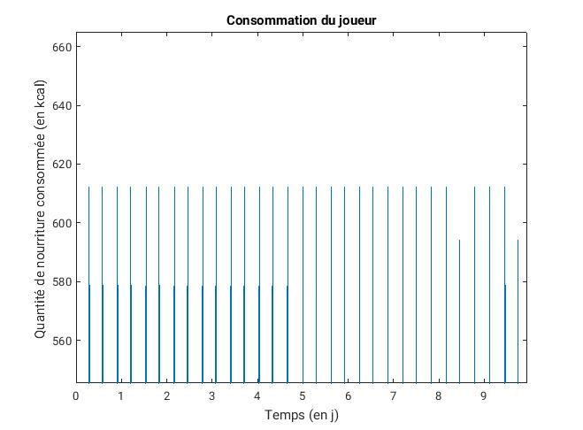

Sommaire
Le jeu
Expérimentations Résultats Discussion et Perspectives Bibliographie Remerciements
Le jeu
Expérimentations Résultats Discussion et Perspectives Bibliographie RemerciementsLa théorie des jeux est l'étude des choix et comportements des individus, appelés joueurs. Une fois la fonction d'utilité définie, on peut s'intéresser au choix stratégique des joueurs. En effet, dans la quasi totalité des jeux, il n'existe pas pour un joueur de choix qui maximise son utilité quelque soit la stratégie qu'il choisit. C'est pourquoi on définit différents types d'équilibres. Ainsi, la notion d'équilibre de Nash est une notion qui décrit une situtation dans laquelle aucun joueur n'a intérêt à dévier unilatéralement de sa stratégie, car s'il le fait, son utilité sera moindre. Cet équilibre n'existe pas pour n'importe quel jeu (par exemple, dans une partie de pierre-papier-ciseaux, on n'a pas d'équilibre de Nash en stratégies pure). C'est pourquoi on définit la notion de stratégies mixtes: un joueur ne se donne plus un choix de stratégies, mais une loi de probabilité sur un ensemble de stratégies (appelé support de la stratégies mixte). Il existe alors toujours un équilibre de Nash en statégies mixtes (par exemple pour pierre-papier-ciseaux, il s'agit de joueur chacune des stratégies avec une probabilité de 1/3). Cependant, n'ayant pas réussi à implémenter un algorithme de calcul de l'équilibre de Nash en stratégies mixtes d'un jeu pour un jeu a N joueurs (N devant au final être égal à 26 pour notre projet), nous avons choisi de faire faire leur choix stratégique aux joueurs selon un autre type d'équilibre: l'équilibre parfait (cf partie 6 de ce cours). Cette notion n'est applicable que pour un jeu en information parfaite. Cela signifie que chaque joueur est capable de discerner dans quelle situation il est au moment de jouer. Par exemple, pour un jeu de pierre-papier-ciseaux, on est en information imparfaite, car il est impossible pour un joueur lorsqu'il effectue son choix de savoir s'il joue contre un adversaire qui a jouer pierre, papier, ou ciseaux. Pour notre simulation, le choix d'un jeu en information parfaite n'est pas aberrant, il correspond à un "ordre" des joueurs: lorsque je choisis combien de nourriture je vais manger, j'ai déjà vu la personne avant moi se servir et commbien elle s'est servi. Et de même, le joueur suivant fera son choix en connaissance du mien. Une autre manière de le voir est de dire qu'on choisit ensemble combien on mange, pour maximiser notre utilité, on sait ce que le joueur suivant choisira pour chacune des stratégies que nous pouvons sélectionner, et faisons notre choix en fonction.
L'algorithme de Kuhn (décrit dans le cours précédemment mentionné) est facile à implémenter, mais il a une grosse limitation, il demande de parcourir chacune des combinaisons de stratégies possible, et a par conséquent une complexité en:
Une fois les fonctions d'utilité et l'équilibre recherché définis, les joueurs sont capable de faire des choix. Il reste donc à modéliser leur évolution en conséquence de ces choix. Mais encore une fois, les modèles existants nous manquent. En effet, quelle est la conséquence de l'absorption d'une certaine quantité de nourriture par un individu sur sa fitness? Nous avons ici utilisé le modèle pharmacocinétique monocompartimental de l'administation orale décrit ci-dessous:
Dans notre cas, les compartiments ont un volume de 1 (pour que les concentrations correspondent aux quantités). D correspond à la quantité de nourriture ingurgitée (coefficientée pour "convertir" les kcal en concentration), et C2 nous donnera directement la fitness de l'individu. Il reste donc simplement à dimensionner ke et ka.
En l'absence de nourriture et pour une fitness de départ C2(0)=1 (l'individu est en pleine santé), l'équation se résout simplement et on a:
Si l'on définit (arbitrairement) un seuil de fitness à partir duquel l'individu meurt, prenons par exemple 5/100, en déterminant le temps de survie à jeun Ts de l'individu, on obtient l'équation:
Or d'après les informations recueillies (partie Expérimentations), Ts varie entre 70 et 80 jours. Pour simuler les différences de constitution entre individus, nous tirerons Ts au hasard d'une loi normale de moyenne 75x24h et d'écart-type 2.5x24h. Pour dimensionner ka, nous avons tenté l'étude de fonction de C2 pour déterminer quelle valeur lui donner en fonction de Tmax. Nous aurions pu alors définir par exemple que le pic d'énergie avait lieu 3h après un repas (Tmax=3h) et calculé le ka correspondant. Mais celle-ci s'étant révelée plus compiquée qu'à première vue, nous avons plutôt opté pour des tests numériques, et en traçant Tmax en fonction de ka, nous avons pu choisir ka=2 pour obtenir ce Tmax.
Il est alors possible de faire tourner le modèle, en calculant à chaque heure l'utilité du joueur, pour déterminer son choix de quantité de nourriture à avaler puis simuler l'évolution de sa fitness après ce choix. Dans les premièrs jours (avant que l'individu ne commence à manquer de nourriture), on retrouve bien la courbe attendue: l'individu se nourrit trois fois par jour d'une quantité correspondant à un tiers de portion quotidienne. Et avec cela, sa fitness reste globalement stable, comme le montre la figure suivante.
